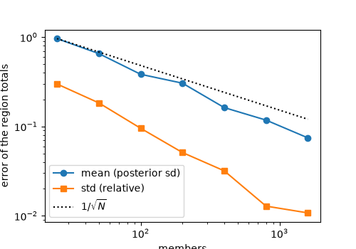

A model with no Jacobian: the ensemble method#
Some forward models can only be run: a TM5 or WRF configuration has no
\(H\) matrix and no Jacobian anyone can write by hand. The rule: draw
members from the prior with problem.ensemble,
run the model on each, and give the runs to fips.solve(problem,
"ensemble", members=members, predicted=modeled). It updates the members with
the observations, as CarbonTracker does (a deterministic square-root ensemble
Kalman filter, EnSRF, applied to all the observations at once), and reports
the posterior of the updated members: their mean, their spread, their gain.
Its answer approaches the analytic posterior as the members grow, with an
error that falls as \(1/\sqrt{N}\).
When not to use it: with an explicit \(H\) (a STILT footprint is one),
fips.solve(problem) gives the posterior exactly, at the cost of one
factorization; the ensemble only approximates it. With a model whose Jacobian
you can write, "gauss_newton" finds the mode and draws the posterior exactly
(A nonlinear forward model).
A model that can only be run#
A line of 120 cells, one a kilometer, and 40 observations along it, each of
which sees the cells upwind, the nearest most. transport stands in for the
transport model: it takes the fluxes of one member and returns the
observations they make. Here it is a line of numpy; in a real inversion it is
a job on a cluster, and the members go to it as files.
In [1]: import numpy as np
In [2]: import pandas as pd
In [3]: import fips
In [4]: n, m = 120, 40
In [5]: cell_x = np.arange(n, dtype=float) # km
In [6]: site_x = np.linspace(2.0, n - 3.0, m)
In [7]: upwind = site_x[:, None] - cell_x[None, :]
In [8]: footprint = np.where(upwind >= 0, np.exp(-upwind / 3.0), 0.0)
In [9]: def transport(flux):
...: """Stand-in for a transport model run: the observations a member's fluxes make."""
...: return footprint @ flux.to_numpy()
...:
The problem still needs its forward map’s labels, so the model is a
ForwardModel with __call__ alone: the ensemble method needs
no Jacobian. When given the runs, the solve never calls it; what does
(simulate(), modeled_obs) runs it
once. A model that cannot run from Python at all can raise in __call__:
the two-stage solve still works.
In [10]: cells = fips.Space({"flux": pd.RangeIndex(n, name="cell")})
In [11]: observed = fips.Space({"ch4": pd.RangeIndex(m, name="obs_id")})
In [12]: class Transport(fips.ForwardModel):
....: def __call__(self, x):
....: return fips.Vector(transport(x.to_series()), observed)
....:
In [13]: model = Transport(observed, cells)
A prior of 1 in every cell with a standard deviation of 0.5, correlated over 2 km (short: the footprints are longer), and observations of a truth drawn from it:
In [14]: def build(obs, forward=model):
....: return fips.Problem(
....: prior=fips.Vector(np.ones(n), cells),
....: prior_cov=fips.Exponential("cell", 2.0).with_std(0.5),
....: obs=obs,
....: obs_cov=fips.Independent().with_std(0.2),
....: forward=forward,
....: )
....:
In [15]: truth, obs = build(fips.Vector(np.zeros(m), observed)).simulate(rng=1)
In [16]: problem = build(obs)
The two stages#
Stage one, in fips: draw the members. Each is a column, labeled as the prior is; their mean is the prior exactly.
In [17]: members = problem.ensemble(100, rng=0)
In [18]: members.shape
Out[18]: (120, 100)
Stage two, outside fips: run the model on each member (members[j] is one
member’s fluxes; write it out with to_csv or to_xarray), and put the
runs in a DataFrame, one row per observation, labeled as problem.obs.index,
one column per member, labeled as the members are (in any order). The runs are
the model’s output, \(F(x_j)\), without the problem’s offset.
In [19]: modeled = pd.DataFrame(
....: {j: transport(members[j]) for j in members.columns},
....: index=problem.obs.index,
....: )
....:
Stage three, in fips: the update.
In [20]: post = fips.solve(problem, "ensemble", members=members, predicted=modeled)
In [21]: regions = fips.Operator(
....: np.kron(np.eye(4), np.ones((1, n // 4))),
....: fips.Space({"total": pd.Index(["W", "WC", "EC", "E"], name="region")}),
....: cells,
....: )
....:
In [22]: post.uncertainty(regions).round(2)
Out[22]:
prior_std posterior_std reduction lower upper
block region
total W 5.35 0.80 0.85 26.23 29.37
WC 5.35 0.70 0.87 27.17 29.92
EC 5.35 0.84 0.84 24.63 27.93
E 5.35 0.97 0.82 28.11 31.92
A problem whose forward runs in Python can skip the middle:
fips.solve(problem, "ensemble", members=100, seed=0) draws the members
with that seed and runs the forward (a ForwardModel’s
__call__, or an Operator’s product) on each, and gives the
same posterior.
What the posterior is, for the ensemble:
estimate(andmean) is the mean of the updated members;variances,cov()andkalman_gainare those of the members, andsample()returns the updated members themselves (it raises past their number);dofs,information_content,chi2andchi2_tests()are the analytic method’s formulas with the members’ covariance of the modeled observations in place of \(H S_0 H^T\);with_data()andwith_gamma()reuse the runs, sotrials()runs the model only to make each trial’s data;what a Gaussian posterior gives and an ensemble’s does not (
recovery(),log_evidence: the evidence of a sample covariance is not the evidence) is in the table, and what needs \(H\) (averaging_kernel(),dofs_per_element) raises for a model.
How close it is#
This stand-in is cheap and linear, so its \(H\) can be built from 120 runs, one a cell, and the exact posterior compared with the ensemble’s. A real transport model is not cheap, which is why it is run per member and not per cell.
In [23]: H = fips.Operator(
....: np.column_stack([transport(pd.Series(np.eye(n)[j])) for j in range(n)]),
....: observed,
....: cells,
....: )
....:
In [24]: exact = fips.solve(build(obs, forward=H))
In [25]: exact.uncertainty(regions).round(2)
Out[25]:
prior_std posterior_std reduction lower upper
block region
total W 5.35 0.86 0.84 25.92 29.29
WC 5.35 0.78 0.85 26.97 30.04
EC 5.35 0.91 0.83 24.56 28.11
E 5.35 1.08 0.80 27.35 31.60
The error of the regions’ totals over 16 ensembles of each size, the mean’s in posterior standard deviations and the standard deviation’s relative to the exact one:
In [26]: exact_totals = (regions @ exact.estimate).values
In [27]: exact_std = np.sqrt(exact.cov(regions).variances.values)
In [28]: def error(N, seed):
....: e = fips.solve(problem, "ensemble", members=N, seed=seed)
....: mean = ((regions @ e.estimate).values - exact_totals) / exact_std
....: std = np.sqrt(e.cov(regions).variances.values) / exact_std - 1.0
....: return np.sqrt(np.mean(mean**2)), np.sqrt(np.mean(std**2))
....:
In [29]: sizes = [25, 50, 100, 200, 400, 800, 1600]
In [30]: curve = pd.DataFrame(
....: [np.sqrt(np.mean([np.square(error(N, s)) for s in range(16)], axis=0)) for N in sizes],
....: index=pd.Index(sizes, name="members"),
....: columns=["mean", "std"],
....: )
....:
In [31]: curve.round(3)
Out[31]:
mean std
members
25 0.963 0.299
50 0.654 0.183
100 0.384 0.095
200 0.305 0.051
400 0.163 0.032
800 0.118 0.013
1600 0.074 0.011
In [32]: np.polyfit(np.log(sizes), np.log(curve), 1)[0].round(2) # the slopes
Out[32]: array([-0.62, -0.84])
In [33]: import matplotlib.pyplot as plt
In [34]: fig, ax = plt.subplots(figsize=(5, 3.5))
In [35]: ax.loglog(curve.index, curve["mean"], "o-", label="mean (posterior sd)")
Out[35]: [<matplotlib.lines.Line2D at 0x7278470ab770>]
In [36]: ax.loglog(curve.index, curve["std"], "s-", label="std (relative)")
Out[36]: [<matplotlib.lines.Line2D at 0x7278470a8590>]
In [37]: ax.loglog(sizes, curve["mean"].iloc[0] * np.sqrt(sizes[0] / np.array(sizes)), "k:", label=r"$1/\sqrt{N}$")
Out[37]: [<matplotlib.lines.Line2D at 0x7278470a81a0>]
In [38]: ax.set_xlabel("members")
Out[38]: Text(0.5, 0, 'members')
In [39]: ax.set_ylabel("error of the region totals")
Out[39]: Text(0, 0.5, 'error of the region totals')
In [40]: ax.legend()
Out[40]: <matplotlib.legend.Legend at 0x7278470a82f0>


The mean’s error falls as \(1/\sqrt{N}\) (a slope of about -0.6 here, a little steeper at the smallest ensembles, where the gain’s error has a part that falls as \(1/N\)): four times the members for half the error. The standard deviation’s falls faster over these sizes: at small ensembles it is mostly a bias, a spread too small by a part that falls as \(1/N\) (the members’ sampling noise fits the data and is taken for information), and the random part, which falls as \(1/\sqrt{N}\), takes over only at large ensembles. At 100 members the totals are within about four tenths of their posterior standard deviation of the exact ones, and their standard deviations about 10% small. (The tests hold the slopes of the mean and of the whole covariance to about -1/2 from 25 to 3200 members on an explicit-\(H\) problem.)
Localization#
An ensemble of \(N\) members has \(N - 1\) directions, far fewer than
the cells, so its covariance between a cell and an observation far away is
noise, not zero. The update follows that noise: it moves cells the observation
cannot see, and shrinks their spread, so the posterior claims more certainty
than it has. Localization multiplies the ensemble’s covariances by weights that
fall to zero with distance (Houtekamer and Mitchell, 2001). fips computes no
distances: the weights are yours, an Operator of the state by
the observations (localization=), and one of the observations by
themselves (obs_localization=). Here, Gaspari and Cohn’s (1999)
fifth-order function, which falls from 1 at no distance to 0 at twice its
half-width:
In [41]: def gaspari_cohn(distance, half_width):
....: """Gaspari and Cohn's (1999) function of a distance, zero beyond twice the half-width."""
....: r = np.abs(distance) / half_width
....: w = np.zeros_like(r)
....: a, b = r <= 1.0, (r > 1.0) & (r < 2.0)
....: w[a] = -r[a]**5 / 4 + r[a]**4 / 2 + 5 * r[a]**3 / 8 - 5 * r[a]**2 / 3 + 1
....: w[b] = r[b]**5 / 12 - r[b]**4 / 2 + 5 * r[b]**3 / 8 + 5 * r[b]**2 / 3 - 5 * r[b] + 4 - 2 / (3 * r[b])
....: return w
....:
In [42]: def localized(N, half_width):
....: return fips.solve(
....: problem, "ensemble", members=N, seed=3,
....: localization=fips.Operator(gaspari_cohn(cell_x[:, None] - site_x[None, :], half_width), cells, observed),
....: obs_localization=fips.Operator(gaspari_cohn(site_x[:, None] - site_x[None, :], half_width), observed, observed),
....: )
....:
The test is the one of Synthetic experiments: 200 sets of data from the problem’s
own world, each solved with the same members (with_data), and how often
each region’s 95% interval holds its true total. The analytic posterior’s
holds it 95% of the time; the ensemble’s, with 40 members and no
localization, much less, since it claims too small a spread:
In [43]: def score(post):
....: table = post.trials(n=200, rng=5, W=regions)
....: error = table["estimate"] - table["truth"]
....: return pd.Series({
....: "coverage": (error.abs() <= 1.96 * table["posterior_std"]).mean(),
....: "rmse": np.sqrt((error**2).mean()),
....: "claimed_std": table["posterior_std"].mean(),
....: })
....:
In [44]: pd.DataFrame({
....: "analytic": score(exact),
....: "40 members": score(fips.solve(problem, "ensemble", members=40, seed=3)),
....: "40, localized 5 km": score(localized(40, 5.0)),
....: "40, localized 10 km": score(localized(40, 10.0)),
....: "40, localized 20 km": score(localized(40, 20.0)),
....: }).round(2)
....:
Out[44]:
analytic 40 members 40, localized 5 km 40, localized 10 km 40, localized 20 km
coverage 0.96 0.70 0.97 0.96 0.94
rmse 0.86 1.41 1.23 1.08 0.97
claimed_std 0.91 0.71 1.33 1.10 0.96
Localized, the 40 members’ intervals hold the truth about as often as they
claim to, and their totals are closer to the truth. The half-width is a
choice: too short cuts real correlations (the footprints here reach about
10 km upwind, and the prior’s correlation 2 km past that), so the update moves
less than it should, and the error and the spread it claims are both larger (5
km); longer comes closer to the analytic posterior (20 km, the best of the
three here), until the noise is back (no localization at all is an infinite
half-width). Choose it with trials, as here, in a world shaped like
yours. With localization the
updated members’ covariance is not the localized Kalman posterior (an ensemble
of \(N\) members cannot hold a covariance of more than \(N - 1\)
directions), and weights of one everywhere give the unlocalized update
exactly.
The update, and what it costs#
The prior members’ deviations \(A\) and their runs’ \(B\) (each
divided by \(\sqrt{N - 1}\)) give the ensemble’s covariances
\(P_{xy} = A B^T\) and \(P_{yy} = B B^T\), each localized by its
weights. The mean moves by the ensemble gain, \(K = P_{xy} (P_{yy} +
S_z/\gamma)^{-1}\), and the deviations by the reduced gain of Whitaker and
Hamill’s (2002) batch square-root filter, computed with the observations
whitened by \(S_z\): their covariance after the update is the Kalman
posterior of the ensemble’s own covariance, exactly. Without localization the
same update is the ensemble transform of the ETKF, \(A^a = A (I + S^T
S)^{-1/2}\), which fips computes from the thin SVD of the whitened runs
(\(O(m N \min(m, N))\)); with localization it eigendecomposes the
\(m \times m\) localized \(P_{yy}\) and forms the \(n \times m\)
localized \(P_{xy}\). A non-diagonal \(S_z\) is factored by Cholesky,
dense. None of it depends on \(\gamma\) or the observations’ values, so
with_gamma() and with_data() cost
a product. The runs are the cost: \(N\) of them, once.
What stays outside: assimilating window after window (CarbonTracker’s lag
loop) is a loop of fips.solve(..., "ensemble") calls, each starting from
the last one’s updated members (post.sample(N), with the next window’s
prior added); no outlier rejection is made.